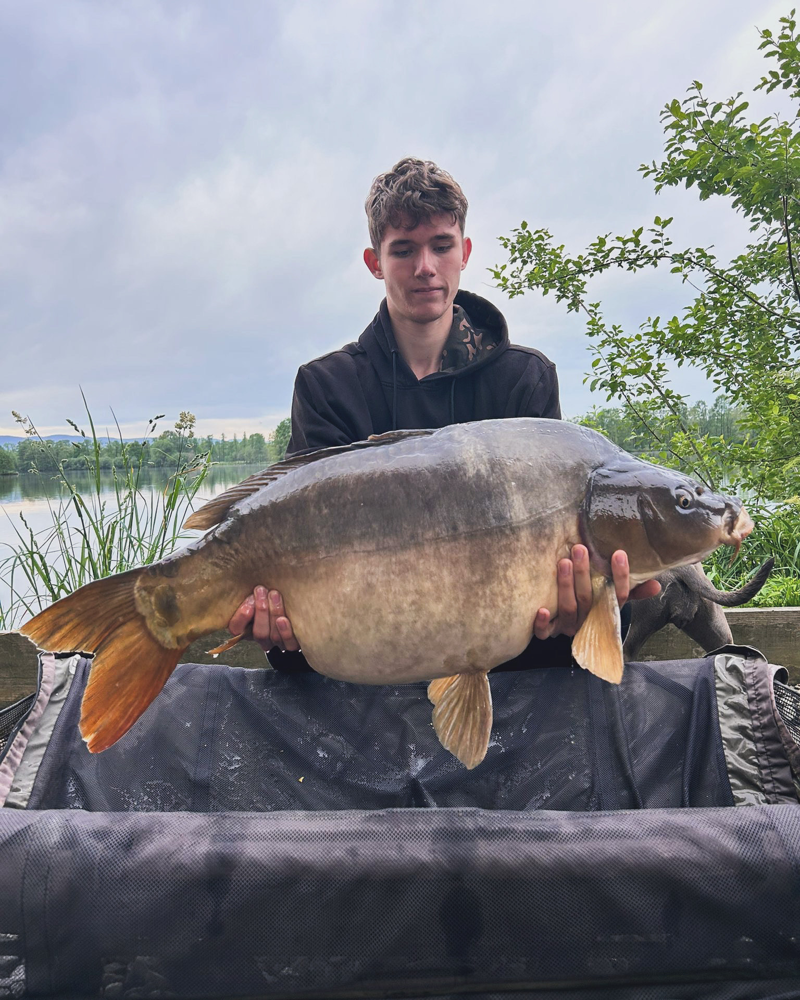

Za co kocham karpiarstwo?
karpiarstwo to coś więcej niż tylko łowienie karpi to styl życia, to sens życia, który dodaje mi energii, powoduje ze chce sie żyć, próby przechytrzenia wąsatej bestii która żyje gdzieś tam w głębinach jeziora sprawiają że przechodzą mnie ciarki na samą myśl o potężnym odjeździe i niesamowicie mocnym holu , to skok adrenaliny, która jest moim wysokooktanowym paliwem karpiarstwo to nie jest chwilowa przygoda ani kaprys jednego sezonu to pasja na całe życie.

Fajny klimat mili ludzie i niezapomniane przygody
Więcej zdjęć znajduje się w Galerii zdjęć
